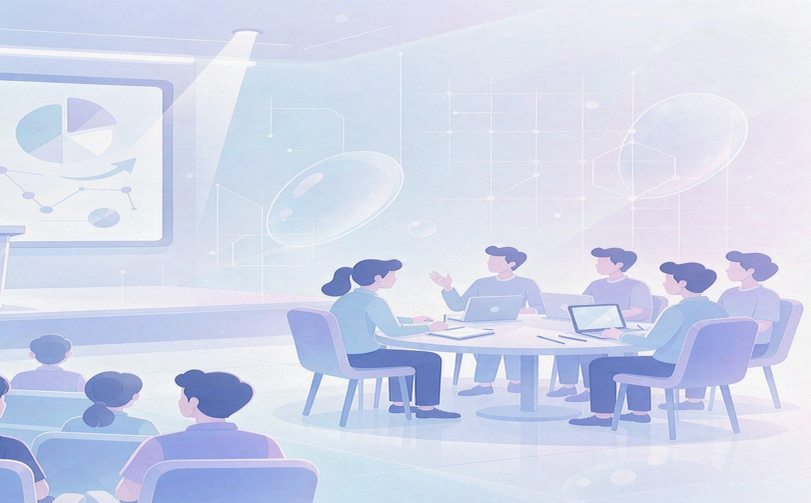
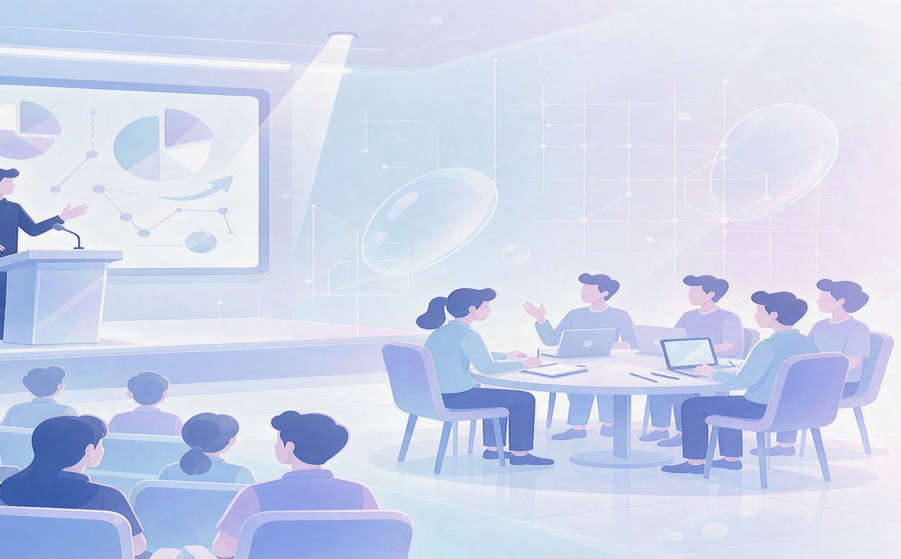
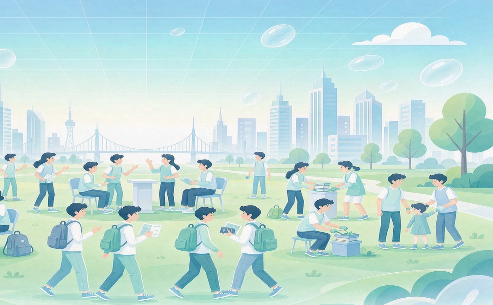
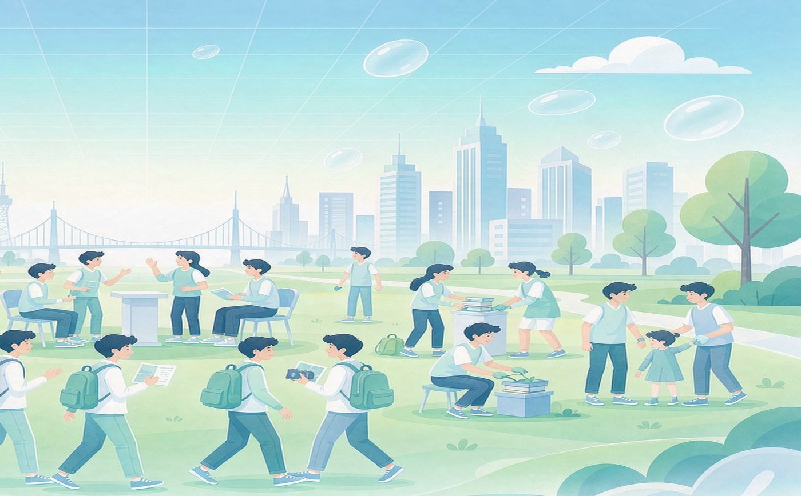
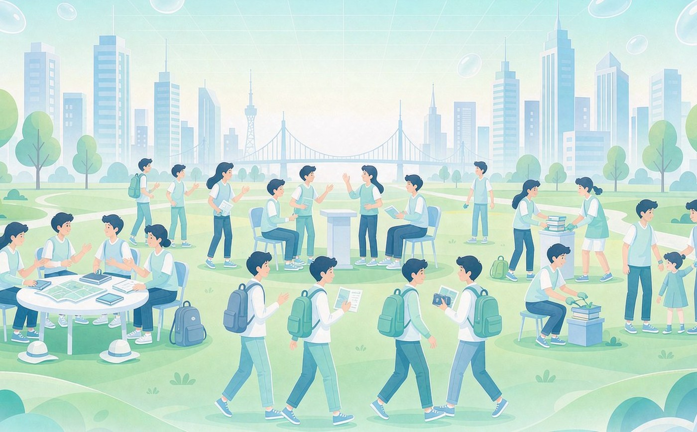
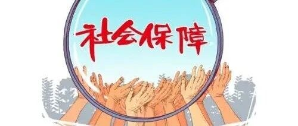

求学历程
学历教育
从一所大学、一个专业、一次变化出发，讨论那些值得被认真对待的问题。

数量容易比，质量要时间证明
阅读述评
先看见处境再谈引导
阅读述评
把工作变成可陈述的成果
阅读述评
先有问题再有课题
阅读述评
职称是路标不是终点
阅读述评
先把问题说清楚
阅读述评
综述要有判断不是罗列
阅读述评
创新是做得深不是换词
阅读述评课堂不是独角戏
阅读述评
班会是学生自己的事
阅读述评
记下来经验才留得住
阅读述评看专业前先看自己要解决什么
阅读述评
先看学校再看专业
阅读述评
专业名单长，适合的只有一两个
阅读述评
考的不是入学，是坚持
阅读述评先把账算细再谈名校
阅读述评性价比不等于适合
阅读述评
友好不等于零门槛
阅读述评
有时候陪伴只是不急着修正
阅读述评让一个人的经验成为大家的方法
阅读述评把大格局讲进日常课堂
阅读述评
停不下来的手机与睡不着的夜
阅读述评
心理资源是如何攒起来的
阅读述评
从要求抬头到理解处境
阅读述评
把无用之用还给生活
阅读述评
把正念当成心智习惯
阅读述评
别让测试定义你自己
阅读述评
技术越发达，越要摆正人的位置
阅读述评
从求助时机到方式选择
阅读述评
从定位到运行的建设方法
阅读述评
看清生活之后，依然好好生活
阅读述评三个地方，三段人生
阅读述评四个角度重看大学价值
阅读述评
技术进入课堂的边界
阅读述评从选题到行文的科研方法
阅读述评
普通人的缴费能力
阅读述评
工作室定位与育人模式
阅读述评